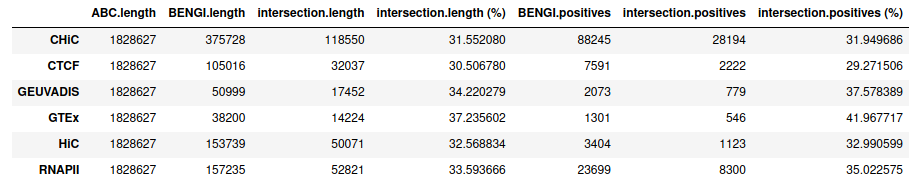

ABC over GM12878 with same accessions as for BENGI GM12878 benchmarks¶
Requirements¶
Chromatin accessibility (DNase-seq)¶
We use the same DNase-seq data as Moore et al. 2020 for DNase-DNase correlation method - that is, the data used by Thurman et al. 2012.
Experiment: ENCSR000COQ https://www.encodeproject.org/experiments/ENCSR000COQ/
Replicate 1: ENCFF664VNB.bam ; Replicate 2: ENCFF790WER.bam
wget https://www.encodeproject.org/files/ENCFF664VNB/@@download/ENCFF664VNB.bam https://www.encodeproject.org/files/ENCFF790WER/@@download/ENCFF790WER.bam -P /work2/project/regenet/results/dnaseseq/homo_sapiens/hg19/gm12878/
Blacklist¶
We use the ENCODE Blacklist for Human GRCh19 available here.
wget https://github.com/Boyle-Lab/Blacklist/raw/master/lists/hg19-blacklist.v2.bed.gz -P /work2/project/regenet/data/species/homo_sapiens/hg19/
Histone mark H3K27ac ChIP-seq¶
In Moore et al. 2020, these histone marks data are used: * to build the ccREs * for the training of Target Finder
For the sake of comparability between methods evaluation, if ever it appears that H3K27ac ChIP-seq accessions are not the same for ccREs and Target Finder training, we should use here the same as the ones used for Target Finder training. We shall verify later whether the accessions are the same or not.
Quotation from Moore et al. 2020:
TargetFinder We reimplemented TargetFinder to run on our cCRE-gene pairs with chromCV. For features, we used the identical datasets described by Whalen et al. for each cell type.
The accessions of H3k27ac ChIP-seq files used are available in supplementary Table S2 of Whalen et al.:
| Cell line | K562 | GM12878 | HeLa-S3 | HUVEC | IMR90 | NHEK |
|---|---|---|---|---|---|---|
| ChIP-seq (H3K27ac) | GSE29611 | GSE29611 | GSE29611 | GSE29611 | GSE16256 | GSE29611 |
So either we download the big file (> 330 gb) for the GSE29611 accession on GEO, or only the info file:
wget ftp://ftp.ncbi.nlm.nih.gov/geo/series/GSE29nnn/GSE29611/suppl/GSE29611_run_info.txt.gz -P /work2/project/regenet/results/chipseq/h3k27ac/homo_sapiens/hg19/gm12878/
in which we find the precise accession for H3K27ac ChIP-seq, which is: GSM733771: https://www.ncbi.nlm.nih.gov/geo/query/acc.cgi?acc=GSM733771
So now:
wget ftp://ftp.ncbi.nlm.nih.gov/geo/samples/GSM733nnn/GSM733771/suppl/GSM733771_hg19_wgEncodeBroadHistoneGm12878H3k27acStdAlnRep1.bam ftp://ftp.ncbi.nlm.nih.gov/geo/samples/GSM733nnn/GSM733771/suppl/GSM733771_hg19_wgEncodeBroadHistoneGm12878H3k27acStdAlnRep2.bam -P /work2/project/regenet/results/chipseq/h3k27ac/homo_sapiens/hg19/gm12878/
/work2/project/regenet/results/chipseq/h3k27ac/homo_sapiens/hg19/gm12878/ GSE29611_run_info.txt.gz GSM733771_hg19_wgEncodeBroadHistoneGm12878H3k27acStdAlnRep1.bam GSM733771_hg19_wgEncodeBroadHistoneGm12878H3k27acStdAlnRep2.bam
Note that we could have download the corresponding accessions from encodeproject.org. That is NOT what we have done for this first run, but that is what we have done in the second run from the Jupyter notebook - which by the way is the only difference and should not have much impact on the results.
Experiment: ENCSR000AKC https://www.encodeproject.org/experiments/ENCSR000AKC/
Replicate 1: ENCFF197QHX.bam ; Replicate 2: ENCFF882PRP.bam
# This IS NOT what we have done for this run (of which results are in `GEO_BENGI_GM12878`).
# These are the accessions used to obtain the results in `BENGI_GM12878`.
wget https://www.encodeproject.org/files/ENCFF197QHX/@@download/ENCFF197QHX.bam https://www.encodeproject.org/files/ENCFF882PRP/@@download/ENCFF882PRP.bam -P /work2/project/regenet/results/dnaseseq/homo_sapiens/hg19/gm12878/
Gene expression (polyA+ RNA-seq)¶
We use the two replicates provided by BENGI Moore et al. 2020 in Additional File 1 Table S1b.
Experiment: ENCSR000COQ Thomas Gingeras, CSHL https://www.encodeproject.org/experiments/ENCSR000COQ/
Replicate 1: ENCFF587ALK ; Replicate 2: ENCFF766CPS
wget https://www.encodeproject.org/files/ENCFF587ALK/@@download/ENCFF587ALK.tsv https://www.encodeproject.org/files/ENCFF766CPS/@@download/ENCFF766CPS.tsv -P /work2/project/regenet/results/rnaseq/homo_sapiens/hg19/gm12878/
Gene annotation¶
We use the encode version 19 of hg19: /work2/project/fragencode/data/species/homo_sapiens/hg19.gencv19/homo_sapiens.gtf
We also need a files with 2 columns making the association between gene names / gene ids. We use the following: /work2/project/fragencode/data/species/homo_sapiens/hg19.gencv19/homo_sapiens.gnid.gnname.tsv
Hi-C¶
First we try without Hi-C data, but later on we may retry with the Hi-C data used to build BENGI datasets.
Ubiquitously expressed genes¶
We use the UbiquitouslyExpressedGenesHG19.txt list of 847 ubiquitously expressed genes used by ABC authors.
Genome file¶
We extract chromosomes sizes from the header of ENCFF664VNB.bam (DNase-seq).
cd /work2/project/regenet/workspace/thoellinger/ABC-Enhancer-Gene-Prediction/BENGI_GM12878
conda activate base && module load bioinfo/samtools-1.9
samtools view -H /work2/project/regenet/results/dnaseseq/homo_sapiens/hg19/gm12878/ENCFF664VNB.bam | grep SQ | cut -f 2,3 |cut -c 4- |awk 'BEGIN{FS="\t"} {split($2,locus,":"); if($1 ~ /^(chr)([0-9]{1,2}$)|(M$)|(X$)|(Y$)/){print($1"\t"locus[2])}}' > reference/chr_sizes
awk '{print $1"\t"0"\t"$2}' reference/chr_sizes > reference/chr_sizes.bed
Data processing¶
Create expression table¶
We use ABC-Enhancer-Gene-Prediction/compute_mean_expression.awk to take as the reference TPM value, the mean value for the 2 replicates. If needed, see content of the script in ABC_on_GM12818.md.
mkdir reference/expression/
awk -f ../compute_mean_expression.awk /work2/project/fragencode/data/species/homo_sapiens/hg19.gencv19/homo_sapiens.gnid.gnname.tsv /work2/project/regenet/results/rnaseq/homo_sapiens/hg19/gm12878/ENCFF587ALK.tsv /work2/project/regenet/results/rnaseq/homo_sapiens/hg19/gm12878/ENCFF766CPS.tsv > reference/expression/GM12878.ENCFF587ALK_ENCFF766CPS.mean.TPM.txt
WARNING: for this run, we first computed mean expression for gene names (as it what was done initially on ABC examples), but to later convert it to expression for gene ids at the beginning of step 2. That was a mistake, as we lost a lot of gene doing so. We shall not reproduce this later! (Note that compute_mean_expression.awk now directly computes mean expression for gene ids so these guidelines are correct).
Filter gene annotation¶
We keep genes only, and select appropriate columns to fit the format of reference/RefSeqCurated.170308.bed.CollapsedGeneBounds.bed available on ABC repository on Github, that is as follows:
chrX 99883667 99894988 ENSG00000000003.10 0 - chrX 99839799 99854882 ENSG00000000005.5 0 + chr20 49551404 49575092 ENSG00000000419.8 0 -
WARNING: ABC assumes gene annotation is sorted at step 2, so we NEED to sort it, otherwise step 2 won't work.
Moreover, we must keep only genes that lie on a chromosome listed in our curated genome_file.
mkdir reference/genes_annotation
awk '$3 ~ /(^gene$)/ {print $1"\t"$4"\t"$5"\t"substr($10,2,length($10)-3)"\t"0"\t"$7}' /work2/project/fragencode/data/species/homo_sapiens/hg19.gencv19/homo_sapiens.gtf | bedtools sort -g /work2/project/regenet/workspace/thoellinger/ABC-Enhancer-Gene-Prediction/bisBENGI_GM12878/reference/chr_sizes -i stdin > reference/genes_annotation/gene_ids.bed
Ubiquitously expressed genes¶
awk 'BEGIN{sep="\t"} NR==FNR {id[$2]=$1; next} id[$1] {print id[$1]}' /work2/project/fragencode/data/species/homo_sapiens/hg19.gencv19/homo_sapiens.gnid.gnname.tsv ../reference/UbiquitouslyExpressedGenesHG19.txt > reference/UbiquitouslyExpressedGenes_ids.txt
$ wc -l reference/UbiquitouslyExpressedGenes_ids.txt 843 $wc -l ../reference/UbiquitouslyExpressedGenesHG19.txt 847
We lost 4 ubiquitously expressed genes along the way.
Running the ABC model¶
Step 1: define candidate elements¶
Call peaks with macs2¶
Write the following in BENGI_GM12878/hi_slurm/step1.1.sh:
#!/bin/sh
# dependencies: python2
macs2 callpeak \
-t /work2/project/regenet/results/dnaseseq/homo_sapiens/hg19/gm12878/ENCFF664VNB.bam /work2/project/regenet/results/dnaseseq/homo_sapiens/hg19/gm12878/ENCFF790WER.bam \
-n ENCFF664VNB_ENCFF790WER.macs2 \
-f BAM \
-g hs \
-p .1 \
--call-summits \
--outdir /work2/project/regenet/workspace/thoellinger/ABC-Enhancer-Gene-Prediction/BENGI_GM12878/ABC_output/Peaks/
Now:
conda activate py2 && module load system/Python-2.7.2
sbatch --mem=2G --cpus-per-task=1 -J step1.1 --mail-user=tristan.hoellinger@inserm.fr --mail-type=END,FAIL --workdir=$PWD --export=ALL -p workq /work2/project/regenet/workspace/thoellinger/ABC-Enhancer-Gene-Prediction/BENGI_GM12878/hi_slurm/step1.1.sh
We stopped here.
conda deactivate && module unload system/Python-2.7.2
Use ABC makeCandidateRegions.py to define candidate regions¶
Once and for all:
conda activate base && conda activate abcmodel && module load bioinfo/samtools-1.9 bioinfo/bedtools-2.27.1 bioinfo/tabix-0.2.5 bioinfo/juicer-1.5.6
As there are peaks over 92 scaffolds listed in ENCFF664VNB_ENCFF790WER.macs2_peaks.narrowPeak, we modified it and ENCFF587ALK_ENCFF766CPS.macs2_peaks.xls to keep chromosomes only (otherwise bedtools sort below would not work). But we have to keep in mind that ENCFF587ALK_ENCFF766CPS.macs2_model.r will still corresponds to DNase peaks over the 92 scaffolds.
awk '$1 ~ /^(chr)([0-9]{1,2}$)|(M$)|(X$)|(Y$)/ {print $0}' ABC_output/Peaks/ENCFF664VNB_ENCFF790WER.macs2_peaks.narrowPeak > ABC_output/Peaks/ENCFF664VNB_ENCFF790WER.chromosomes_only.macs2_peaks.narrowPeak
awk 'NR <= 28 || $1 ~ /^(chr)([0-9]{1,2}$)|(M$)|(X$)|(Y$)/ {print $0}' ABC_output/Peaks/ENCFF664VNB_ENCFF790WER.macs2_peaks.xls > ABC_output/Peaks/ENCFF664VNB_ENCFF790WER.chromosomes_only.macs2_peaks.xls
We sort the results:
srun --pty bash
bedtools sort -faidx reference/chr_sizes -i ABC_output/Peaks/ENCFF664VNB_ENCFF790WER.chromosomes_only.macs2_peaks.narrowPeak > ABC_output/Peaks/ENCFF664VNB_ENCFF790WER.macs2_peaks.narrowPeak.sorted
Now as ../src/makeCandidateRegions.py does not support multiple bam inputs, we first need to concatenate the bam of the 2 replicates. Indeed, makeCandidateRegions.py will use the bam input to count DNase reads on each peak of ENCFF664VNB_ENCFF790WER.macs2_peaks.narrowPeak.sorted found with macs2.
To that purpose, write the following in hi_slurm/step1.2.sh:
(WARNING: depending on the size of the input bam, which may be much variable, the execution on 1 thread only can take from a few minutes to several hours, so better use at least 8 threads)
#!/bin/sh
# dependencies: bioinfo/samtools-1.9 bioinfo/bedtools-2.27.1
if [[ ! -f /work2/project/regenet/results/dnaseseq/homo_sapiens/hg19/gm12878/ENCFF664VNB_ENCFF790WER.bam ]]
then
if [[ ! -f /work2/project/regenet/results/dnaseseq/homo_sapiens/hg19/gm12878/ENCFF664VNB_ENCFF790WER.sam ]]
then
samtools view -@ 8 -h /work2/project/regenet/results/dnaseseq/homo_sapiens/hg19/gm12878/ENCFF664VNB.bam > /work2/project/regenet/results/dnaseseq/homo_sapiens/hg19/gm12878/ENCFF664VNB_ENCFF790WER.sam
samtools view -@ 8 /work2/project/regenet/results/dnaseseq/homo_sapiens/hg19/gm12878/ENCFF790WER.bam >> /work2/project/regenet/results/dnaseseq/homo_sapiens/hg19/gm12878/ENCFF664VNB_ENCFF790WER.sam
samtools view -@ 8 -S -b /work2/project/regenet/results/dnaseseq/homo_sapiens/hg19/gm12878/ENCFF664VNB_ENCFF790WER.sam > /work2/project/regenet/results/dnaseseq/homo_sapiens/hg19/gm12878/ENCFF664VNB_ENCFF790WER.bam
rm /work2/project/regenet/results/dnaseseq/homo_sapiens/hg19/gm12878/ENCFF664VNB_ENCFF790WER.sam
else
samtools view -@ 8 -S -b /work2/project/regenet/results/dnaseseq/homo_sapiens/hg19/gm12878/ENCFF664VNB_ENCFF790WER.sam > /work2/project/regenet/results/dnaseseq/homo_sapiens/hg19/gm12878/ENCFF664VNB_ENCFF790WER.bam
fi
fi
sbatch --mem=2G --cpus-per-task=8 -J step1.2 --mail-user=tristan.hoellinger@inserm.fr --mail-type=END,FAIL --workdir=$PWD --export=ALL -p workq /work2/project/regenet/workspace/thoellinger/ABC-Enhancer-Gene-Prediction/BENGI_GM12878/hi_slurm/step1.2.sh
$ seff 21980507 CPU Efficiency: 60.91% of 03:50:08 core-walltime Job Wall-clock time: 00:28:46 Memory Utilized: 8.98 MB
Now write the following in GM12878/hi_slurm/step1.3.sh
#!/bin/sh
# dependencies: python3 bioinfo/samtools-1.9 bioinfo/bedtools-2.27.1 bioinfo/tabix-0.2.5 bioinfo/juicer-1.5.6
python ../src/makeCandidateRegions.py \
--narrowPeak /work2/project/regenet/workspace/thoellinger/ABC-Enhancer-Gene-Prediction/BENGI_GM12878/ABC_output/Peaks/ENCFF664VNB_ENCFF790WER.macs2_peaks.narrowPeak.sorted \
--bam /work2/project/regenet/results/dnaseseq/homo_sapiens/hg19/gm12878/ENCFF664VNB_ENCFF790WER.bam \
--outDir /work2/project/regenet/workspace/thoellinger/ABC-Enhancer-Gene-Prediction/BENGI_GM12878/ABC_output/Peaks/ \
--chrom_sizes /work2/project/regenet/workspace/thoellinger/ABC-Enhancer-Gene-Prediction/BENGI_GM12878/reference/chr_sizes \
--regions_blacklist /work2/project/regenet/data/species/homo_sapiens/hg19/hg19-blacklist.v2.bed.gz \
--peakExtendFromSummit 250 \
--nStrongestPeaks 150000
#Expected output: params.txt, foo.macs2_peaks.narrowPeak.sorted.candidateRegions.bed, foo.macs2_peaks.narrowPeak.sorted.foo.bam.Counts.bed
WARNING: depending on the length of the inputs, this script may be very RAM-demanding. So we recommend to allocate at least 16 GB RAM to avoid "out of memory" errors.
sbatch --mem=16G --cpus-per-task=1 -J step1.3 --mail-user=tristan.hoellinger@inserm.fr --mail-type=END,FAIL --workdir=$PWD --export=ALL -p workq /work2/project/regenet/workspace/thoellinger/ABC-Enhancer-Gene-Prediction/BENGI_GM12878/hi_slurm/step1.3.sh
Step 2: quantifying enhancer activity¶
Use ABC run.neighborhoods.py¶
Write the following in BENGI_GM12878/hi_slurm/step2.sh.
#!/bin/sh
python ../src/run.neighborhoods.py \
--candidate_enhancer_regions /work2/project/regenet/workspace/thoellinger/ABC-Enhancer-Gene-Prediction/BENGI_GM12878/ABC_output/Peaks/ENCFF664VNB_ENCFF790WER.macs2_peaks.narrowPeak.sorted.candidateRegions.bed \
--genes /work2/project/regenet/workspace/thoellinger/ABC-Enhancer-Gene-Prediction/BENGI_GM12878/reference/genes_annotation/gene_ids.bed \
--H3K27ac /work2/project/regenet/results/chipseq/h3k27ac/homo_sapiens/hg19/gm12878/GSM733771_hg19_wgEncodeBroadHistoneGm12878H3k27acStdAlnRep1.bam,/work2/project/regenet/results/chipseq/h3k27ac/homo_sapiens/hg19/gm12878/GSM733771_hg19_wgEncodeBroadHistoneGm12878H3k27acStdAlnRep2.bam \
--DHS /work2/project/regenet/results/dnaseseq/homo_sapiens/hg19/gm12878/ENCFF664VNB.bam,/work2/project/regenet/results/dnaseseq/homo_sapiens/hg19/gm12878/ENCFF790WER.bam \
--expression_table /work2/project/regenet/workspace/thoellinger/ABC-Enhancer-Gene-Prediction/BENGI_GM12878/reference/expression/GM12878.ids.ENCFF587ALK_ENCFF766CPS.mean.TPM.txt \
--chrom_sizes /work2/project/regenet/workspace/thoellinger/ABC-Enhancer-Gene-Prediction/BENGI_GM12878/reference/chr_sizes \
--ubiquitously_expressed_genes /work2/project/regenet/workspace/thoellinger/ABC-Enhancer-Gene-Prediction/BENGI_GM12878/reference/UbiquitouslyExpressedGenes_ids.txt \
--cellType GM12878 \
--outdir /work2/project/regenet/workspace/thoellinger/ABC-Enhancer-Gene-Prediction/BENGI_GM12878/ABC_output/Neighborhoods/
WARNING: depending on the length of the inputs, this script may be very RAM-demanding. So we recommend to allocate 32 GB RAM in general to avoid "out of memory" errors.
sbatch --mem=16G --cpus-per-task=1 -J step2 --mail-user=tristan.hoellinger@inserm.fr --mail-type=END,FAIL --workdir=$PWD --export=ALL -p workq hi_slurm/step2.sh
We should find a way to parallelize run.neighborhoods.py as it took almost 3 hours, with 99,9% cpu efficiency.
Step 3: computing the ABC score¶
If experimentally derived contact data is not available, one can run the ABC model using the powerlaw estimate only. In this case the
--HiCdirargument should be excluded frompredict.pyand the--score_column powerlaw.Scoreargument should be included inpredict.py. In this case theABC.Scorecolumn of the predictions file will be set toNaN. Thepowerlaw.Scorecolumn of the output prediction files will be the relevant Score column to use.
Write the following in BENGI_GM12878/hi_slurm/step3.sh.
#!/bin/sh
python ../src/predict.py \
--enhancers /work2/project/regenet/workspace/thoellinger/ABC-Enhancer-Gene-Prediction/BENGI_GM12878/ABC_output/Neighborhoods/EnhancerList.txt \
--genes /work2/project/regenet/workspace/thoellinger/ABC-Enhancer-Gene-Prediction/BENGI_GM12878/ABC_output/Neighborhoods/GeneList.txt \
--score_column powerlaw.Score \
--hic_resolution 5000 \
--scale_hic_using_powerlaw \
--threshold .02 \
--cellType GM12878 \
--outdir /work2/project/regenet/workspace/thoellinger/ABC-Enhancer-Gene-Prediction/BENGI_GM12878/ABC_output/Predictions/ \
--make_all_putative
sbatch --mem=32G --cpus-per-task=1 -J step3 --mail-user=tristan.hoellinger@inserm.fr --mail-type=END,FAIL --workdir=$PWD --export=ALL -p workq hi_slurm/step3.sh
Results¶
Summary statistics¶
We create a sumstats sub-directory in ABC_output/Predictions then compute summary statistics using bedpe.sumstats.sh script.
module load compiler/gcc-7.2.0 system/R-4.0.2_gcc-7.2.0
R packages optparse and reshape2 are required. Moreover, when executing bedpe.sumstats.sh, one must have to chmod u+x some dependencies if there are Permission denied errors.
cd ABC_output/Predictions/
gzip -c EnhancerPredictions.bedpe > EnhancerPredictions.bedpe.gz
cd sumstats/
sh ../../../../../scripts/bedpe.sumstats.sh ../EnhancerPredictions.bedpe.gz "0.02-1" "500-500"
Or replace 0.02-1 with <choose a min>-<choose a max> where min and max can be found with
awk 'BEGIN{FS="\t"; max=0;} {if($8>max){max=$8}} END{print(max);}' ../EnhancerPredictions.bedpe
awk 'BEGIN{FS="\t"; min=1;} {if($8<min){min=$8}} END{print(min);}' ../EnhancerPredictions.bedpe


Evaluation of ABC predictions for GM12878 on BENGI datasets¶
Intersection between ABC prediction / BENGI¶
Standard ABC¶

Note that we obtain these values with the notebook, for which we use other histone mark H3K27ac ChIP-seq (same accessions but downloaded from ENCODE instead of GEO -> processed another way). They are very slightly different from what we would have found here.
Standard ABC with more peaks¶
Here is what we find being more lenient when calling peaks (p=0.2) and taking up to 500,000 peaks (again, using ENCODE accessions for histone marks)

ABC starting from ccRE-dELSs as candidate enhancers¶
Starting from distal (>= 2kb) ENCODE ccREs with Enhancer-Like Signature as candidate regions (instead of performing ABC step 1), we obtain, as expected, 100% intersection with BENGI datasets for GM12878. This enables us to compute true Precision - Recall curves and AUPR.
Precision / recall curve¶
ABC starting from ccRE-dELSs as candidate enhancers¶
Note that even though these curves are computed over the full BENGI datasets, they still grossly overestimate the Precision, as false positives that fall outside of the BENGI datasets are not taken into account.

Even with such an overestimate of the Precision of ABC predictions, they are only slightly better than random, and largely outperformed by a baseline distance method.
Distance method¶
For information purpose, we also computed pseudo Precision - Recall curves for ABC predictions that made only partial intersect with BENGI - that is, the ones from standard ABC method. Note that the interpretation is limited.
Standard ABC¶

Standard ABC with more peaks¶